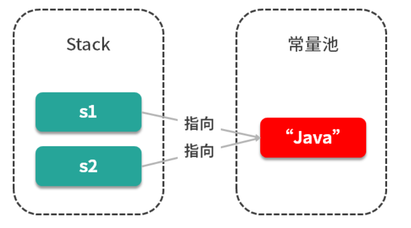
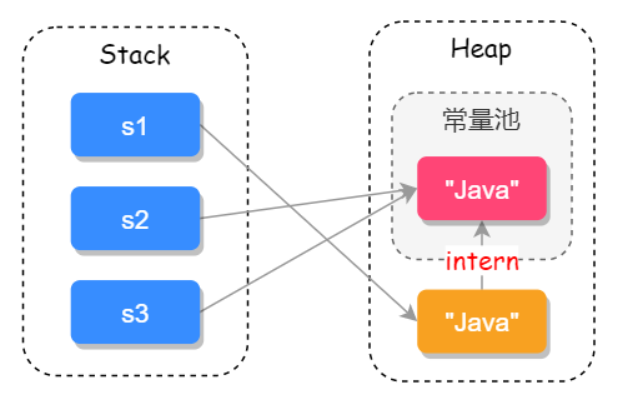

几乎所有的Java面试都是以String开始的，如果第一个问题没有回答好，则会给面试官留下非常不好的第一印象，而糟糕的第一印象则会直接影响到自己的面试结果，就好像刚破壳的小鹅一样，会把第一眼看到的动物当成自己的母亲，即使它第一眼看到的是一只小狗或小猫，也会默认跟随其后，心理学把这种现象叫做印刻效应。印刻效应不仅存在于低等动物之中，同样也适用于人类，所以对于String的知识，我们必须深入的掌握才能为自己赢得更多的筹码。
本课时的问题是：String 是如何实现的？它有哪些重要的方法？
典型回答
以主流的JDK版本1.8来说，String内部实际存储结构为char数组，源码如下：
1 | public final class String implements java.io.Serializable,Comparable<String>，CharSequence{ |
String 源码中包含下面几个重要的方法。
1.多构造方法
String字符串有以下4个重要的构造方法：
1 | //String 为参数的构造方法 |
其中，比较容易被我们忽略的是以StringBuffer和StringBuilder为参数的构造函数，因为这三种数据类型，我们通常都是单独使用的，所以这个小细节我们需要特别留意一下。
2.equals（）比较两个字符串是否相等
源码如下:
1 | public boolean equals(Object anObject){ |
String 类型重写了Object中的equals(）方法，equals(）方法需要传递一个Object类型的参数值，在比较时会先通过instanceof 判断是否为String 类型，如果不是则会直接返回false，instanceof的使用如下：
1 | Object oString="123"; |
当判断参数为String类型之后，会循环对比两个字符串中的每一个字符，当所有字符都相等时返回true，否则则返回false。
还有一个和equals0比较类似的方法equalslgnoreCase0，它是用于忽略字符串的大小写之后进行字符串对比。
3.compareTo（）比较两个字符串
compareTo0方法用于比较两个字符串，返回的结果为int类型的值，源码如下：
1 | public int compareTo(String anotherString){ |
从源码中可以看出，compareTo0方法会循环对比所有的字符，当两个字符串中有任意一个字符不相同时，则return char1-char2。比如，两个字符串分别存储的是1和2，返回的值是-1；如果存储的是1和1，则返回的值是0，如果存储的是2和1，则返回的值是1。
还有一个和compareTo0 比较类似的方法compareTolgnoreCase0，用于忽略大小写后比较两个字符串。
可以看出compareTo0方法和equals0方法都是用于比较两个字符串的，但它们有两点不同：
- equals0可以接收一个Object 类型的参数，而compareTo0只能接收一个String类型的参数；
- equals0返回值为Boolean，而compareTo0的返回值则为int。
它们都可以用于两个字符串的比较，当equals0方法返回true时，或者是compareTo0方法返回0时，则表示两个字符串完全相同。
4.其他重要方法
- indexOf(）：查询字符串首次出现的下标位置
- lastlndexOf()：查询字符串最后出现的下标位置
- contains()：查询字符串中是否包含另一个字符串
- toLowerCase()：把字符串全部转换成小写
- toUpperCase()：把字符串全部转换成大写
- length()：查询字符串的长度
- trim()：去掉字符串首尾空格
- replace()：替换字符串中的某些字符
- split()：把字符串分割并返回字符串数组
- join()：把字符串数组转为字符串
考点分析
这道题目考察的重点是，你对Java 源码的理解，这也从侧面反应了你是否热爱和喜欢专研程序，而这正是一个优秀程序员所必备的特质。
String 源码属于所有源码中最基础、最简单的一个，对String源码的理解也反应了你的Java基础功底。
String问题如果再延伸一下，会问到一些更多的知识细节，这也是大厂一贯使用的面试策略，从一个知识点入手然后扩充更多的知识细节，对于String也不例外，通常还会关联的询问以下问题：
- 为什么String 类型要用final修饰？
- ==和equals的区别是什么？
- String和StringBuilder、StringBuffer 有什么区别？
- String的intern()方法有什么含义？
- String 类型在 JVM（Java虚拟机）中是如何存储的？编译器对String做了哪些优化？
接下来我们一起来看这些问题的答案。
知识拓展
1.==和equals的区别
==对于基本数据类型来说，是用于比较“值”是否相等的；而对于引用类型来说，是用于比较引用地址是否相同的。
查看源码我们可以知道Object中也有equals0方法，源码如下：
1 | public boolean equals(Object obj) { |
可以看出，Object中的equals0方法其实就是==，而String重写了equals0方法把它修改成比较两个字符串的值是否相等。
源码如下：
1 | public boolean equals(Object anObject){ |
2.final 修饰的好处
从String类的源码我们可以看出String是被final修饰的不可继承类，源码如下：
Java 语言之父James Gosling的回答是，他会更倾向于使用final，因为它能够缓存结果，当你在传参时不需要考虑谁会修改它的值；如果是可变类的话，则有可能需要重新拷贝出来一个新值进行传参，这样在性能上就会有一定的损失。
James Gosling 还说迫使String类设计成不可变的另一个原因是安全，当你在调用其他方法时，比如调用一些系统级操作指令之前，可能会有一系列校验，如果是可变类的话，可能在你校验过后，它的内部的值又被改变了，这样有可能会引起严重的系统崩溃问题，这是迫使String类设计成不可变类的一个重要原因。
总结来说，使用final修饰的第一个好处是安全；第二个好处是高效，以JVM中的字符串常量池来举例，如下两个变量：
1 | String s1 = "java"; |
只有字符串是不可变时，我们才能实现字符串常量池，字符串常量池可以为我们缓存字符串，提高程序的运行效率，如下图所示：

试想一下如果String是可变的，那当s1的值修改之后，52的值也跟着改变了，这样就和我们预期的结果不相符了，因此也就没有办法实现字符串常量池的功能了。
3.String 和StringBuilder、StringBuffer的区别
因为String类型是不可变的，所以在字符串拼接的时候如果使用String的话性能会很低，因此我们就需要使用另一个数据类型 StringBuffer，它提供了append和insert方法可用于字符串的拼接，它使用synchronized来保证线程安全，如下源码所示：
1 |
|
因为它使用了synchronized来保证线程安全，所以性能不是很高，于是在JDK1.5就有了StringBuilder，它同样提供了append和insert的拼接方法，但它没有使用synchronized来修饰，因此在性能上要优于StringBufer，所以在非并发操作的环境下可使用 StringBuilder来进行字符串拼接。
4.String 和JVM
String 常见的创建方式有两种，直接赋值的方式”String s1=”Java”；”和“Strings2=new String（”Java”）；”的方式，但两者在JVM的存储区域却截然不同，在JDK1.8中，变量s1会先去字符串常量池中找字符串“Java”，如果有相同的字符则直接返回常量句柄，如果没有此字符串则会先在常量池中创建此字符串，然后再返回常量句柄；而变量s2是直接在堆上创建一个变量，如果调用
intern方法才会把此字符串保存到常量池中，如下代码所示：
1 | String sl =new String("Java"); |
它们在 JVM 存储的位置，如下图所示：

注：JDK1.7之后把永生代换成的元空间，把字符串常量池从方法区移到了Java堆上。
除此之外编译器还会对String字符串做一些优化，例如以下代码：
1 | String s1 = "Ja" + "va"; |
虽然51拼接了多个字符串，但对比的结果却是true，我们使用反编译工具，看到的结果如下：
1 | Compiled from "StringExample.java" |
从编译代码#2可以看出，代码“Ja”+”va”被直接编译成了“Java”，因此s1==s2的结果才是
true，这就是编译器对字符串优化的结果。
小结
本课时从String 的源码入手，重点讲了String的构造方法、equals0方法和compareTo())方法，其中equals(）重写了Object的equals())方法，把引用对比改成了字符串值对比，也介绍了final修饰String的好处，可以提高效率和增强安全性，同时我们还介绍了String和JVM的一些执行细节。